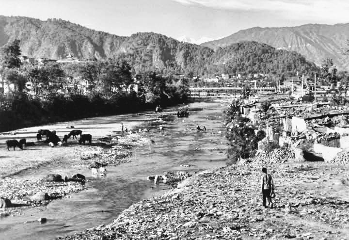
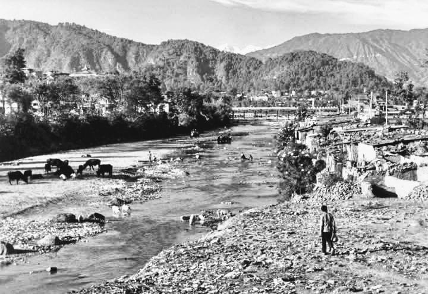

Historical
Peaceful
Nepal
E-Library
Peaceful
Nepal
E-Library
E-Library for the
Nepali Students

Mustang, a mesmerizing district in northern Nepal, holds immense historical, cultural, and natural significance. Nestled in the trans-Himalayan region, Mustang is known for its dramatic landscapes, ancient Tibetan-influenced traditions, and the hidden wonders of the former Kingdom of Lo. With its rugged cliffs, barren valleys, and windswept plateaus, Mustang presents a striking contrast to Nepal’s lush green hills, offering a unique and otherworldly experience. As a gateway to the legendary Lo Manthang, the walled capital of Upper Mustang, the region attracts trekkers, explorers, and spiritual seekers eager to witness its mystical charm. Mustang has long been a crucial trade route between Nepal and Tibet, shaping its rich cultural and economic history. Despite modernization, the region has preserved its timeless traditions, evident in the ancient monasteries, prayer flags fluttering in the wind, and mud-brick houses that dot the arid landscape. The people of Mustang, primarily of Tibetan descent, continue to uphold their centuries-old customs, language, and Buddhist practices, making the district a living testament to Himalayan heritage. The district is home to remarkable landmarks, including the revered Muktinath Temple, a sacred pilgrimage site for both Hindus and Buddhists, and the mystical Sky Caves of Mustang, an extensive network of ancient cave dwellings and monasteries carved into cliffs. The breathtaking Kali Gandaki Gorge—the world’s deepest—adds to the region’s awe-inspiring beauty, while the red rock formations of the Forbidden Kingdom create an enchanting, almost surreal, landscape. Festivals such as Tiji, Lhosar, and Buddha Jayanti are celebrated with great enthusiasm, featuring vibrant masked dances, traditional rituals, and processions that showcase Mustang’s strong Buddhist identity. The region is also known for its distinct Himalayan cuisine, including dishes like dried yak meat, thukpa (Tibetan noodle soup), and the local specialty, Mustang apples and apple-based products such as cider and brandy. With its ancient history, dramatic landscapes, and deep-rooted spiritual traditions, Mustang continues to stand as a mystical Himalayan wonder, preserving its unique identity while embracing the modern world.
 
